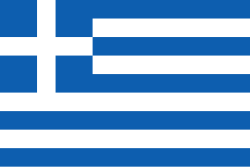
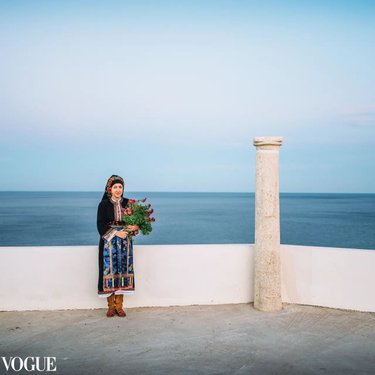
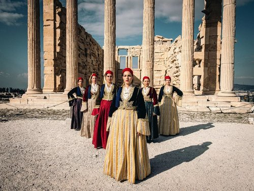
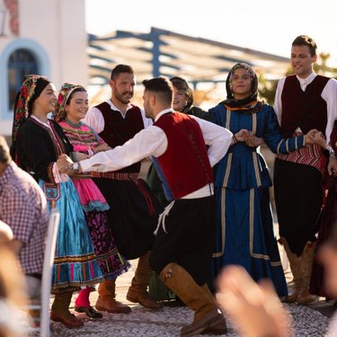
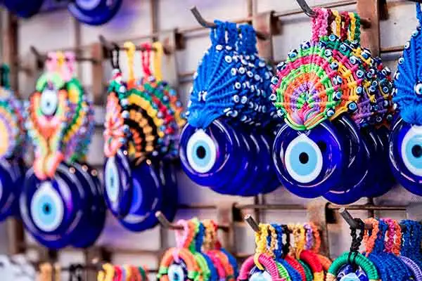

Grecia
Geografía
País europeo localizado debajo de Albania, Bulgaria y Macedonia del Norte



Cultura Griega
La religión de la Antigua Grecia abarca la colección de las creencias y rituales practicados en Grecia Antigua en la forma de prácticas culturales, homólogas de la mitología griega. En el mundo griego, la práctica religiosa variaba lo suficiente como para poder hablar de religiones griegas. Las prácticas culturales de los helenos se extendían más allá de la Grecia continental, a las islas y las costas de Jonia (en Asia Menor), a la Magna Grecia (Sicilia e Italia del sur), y a las colonias griegas dispersas por el Mediterráneo occidental, como Massilia. Ejemplos griegos moderados son el culto y las creencias etruscas y la religión romana.
Trajes y danzas tradicionales
Los trajes y danzas locales representan todo lo colorido de las costumbres y tradiciones griegas. Dan vida a los festivales de verano, con variaciones que se encuentran tanto en el continente como en las islas, tanto en los archipiélagos, como en las islas del Egeo y el Jónico, y hasta con variaciones entre las propias islas. Las danzas transmiten mensajes de parentesco y solidaridad, con letras que elogian las raíces de un lugar y cuentan historias de amor, duelo y alegría. Los trajes, por su parte, están diseñados para representar el estatus social de la persona que los lleva, especialmente de las mujeres. Para los grupos étnicos griegos (los valacos, los pomacos, los arvanitas, los griegos pónticos, los tsakones del Peloponeso, los antiguos nómadas Sarakatsani de Epiro y muchas más), los trajes locales son literalmente la personificación de su identidad.



Mal de ojo
Algo realmente en lo que creen la gran mayoría de griegos con firmeza. Todos opinan de formas para quitárselo. “Matiasmenos” es estar bajo sus efectos. Es una energía que nos llega de otros que nos han mirado mal o nos odian. Y lo hacen no siempre a propósito, si no que se puede general incluso sin querer por personas tóxicas de nuestro entorno. Mirar mal tiene una repercusión importante en Grecia. Existen amuletos que llevamos encima o tenemos en el coche o en casa. Uno de los más conocidos es el famoso “ojo azul griego” que encontraremos se vende por todos lados y no solo en tiendas de souvenirs, también en kioskos en las calles. La gente mayor en los pueblos y Atenas para curar el mal de ojo “escupen” varias veces al suelo (sin saliva) como método para quitar el mal de ojo. Si te ocurre en tu viaje, no te lo tomes a mal. Están ahuyentando la mala suerte a modo de bendición.
